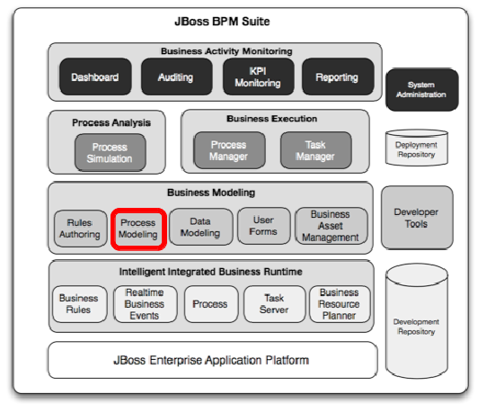

Lab 18 - Automated task reassignment
Lab Goal
To automate task such that when claimed, if user does not complete in specified time, reassign back to group for another user to process.

Approve Rewards problem
The process has been running for awhile but we notice that when our task is created, it is assigned to the manager role. This group can then claim the task and work on it hopefully completing it in a timely fashion. One problem that has come up is that when a task is claimed and the manager then become sick (or does not come to work for some other reason), the task then sits unattended for as long as that manager is out of her office.
Approve Rewards fix
To fix this issue, we can setup our Approve Rewards task to auto-reassign a claimed task if not completed within a time we specify. The reassignment would be to put it back into the Manager group for another manager to claim and complete.
User task reassignment
- In project authoring we open rewards process
AUTHORING -> PROJECT AUTHORING -> rewards-approval
User task reassignment
- Select (click)
Approve Rewarduser task and slide outPropertiespanel

User task reassignment
- In
Propertiespanel under sectionExtra Properties - Select
Reassignmentfield to openEditor for reassignments
User task reassignment
- Click on
Add Reassignmentfor a new entry - Fill in all fields as shown to have any task claimed by
ERICSreturned to the manager group if not completed within 1 minute. (could be 1d, 1w, etc) - Click on
OKbutton to close reassignment editor
User task reassignment
- Save the process and add commit message as shown
- Now it is time to test reassignment of a claimed task back into the group after 1 minute
Test task reassignment
- Build and deploy the rewards project
Project Authoring -> Tools -> Project Editor
Test task reassignment
- click on Build & Deploy button in top right corner
Test task reassignment
- Click on No in Information popup to just build and deploy
- Watch for the green popup bar stating that the build was successful
Test task reassignment
- Now we can examine our deployed process definition
Project Authoring -> Process Mangement -> Process Definitions- To view our definition details, click on the magnifying glass icon under Actions


Test task reassignment
- An overview of the various process definition details is given in this view
- You can start a process instance from here by clicking the New Instance button

Test task reassignment
- We can also start a process instance from the Process Definition view by clicking the start-icon under Actions
Test task reassignment
- Either way, we get a popup start process form that we designed previously
- We fill in the rewards submission details and click on the arrow at the bottom

Test task reassignment
- Watch for the yellow popup bar stating Process instance started
- We are then presented with the process instance view, notice progression to Approve Reward task
- Note your
Instance IDmay differ from ours

Test task reassignment
- Open the task list to view waiting user tasks
Project Authoring -> Tasks -> Tasks List- Our task is in the Active and Group lists until claimed

Test task reassignment
- Click on open lock icon to claim the task, a yellow popup bar confirms claim
- We are presented with the details of our task
Test task reassignment
- Note the task is now listed in
ActiveandPersonaltabs - It is no longer in the
Grouptab, meaning not available to all Managers anymore
Test task reassignment
- Wait 1 minute and then click
refreshbutton on theTask List - The task you owned is not in your
Personallist, but back into theGroup

Rewards process project
(next up, more task updates needed so we add automated email notifications for tasks taking too long...)

- JBoss BRMS & BPM Suite Articles
- JBoss BPM Suite Demos
- JBoss bpmPaaS Demos